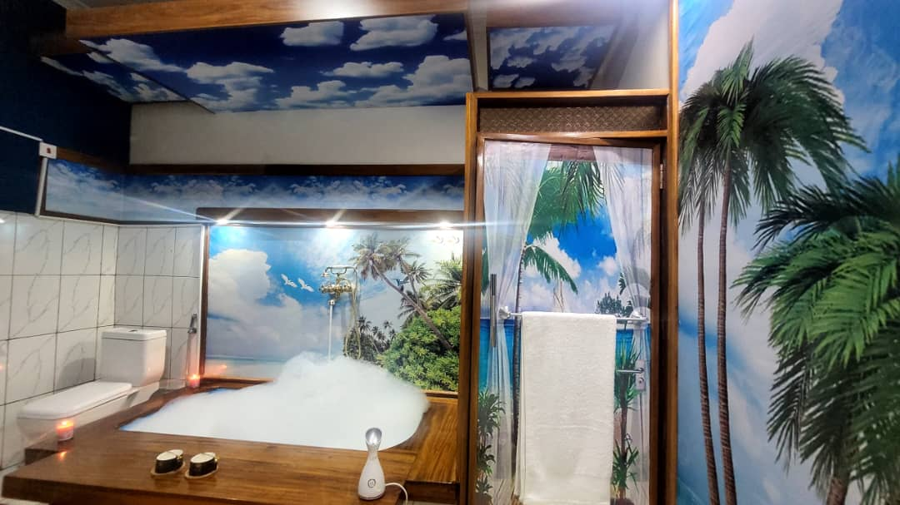
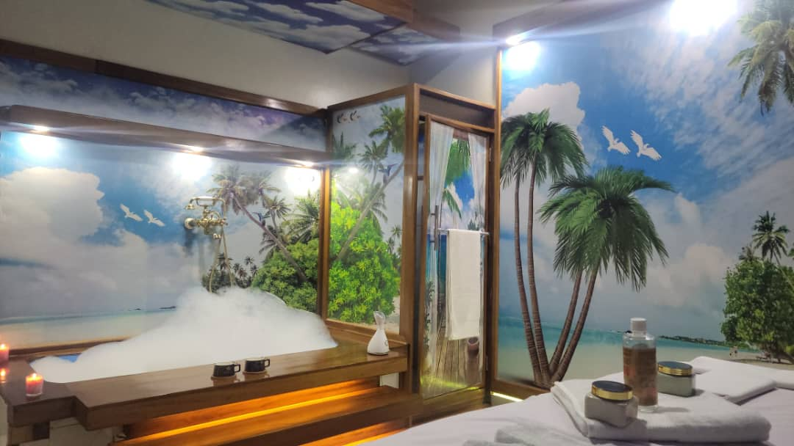

Herbal & Plant-Based Wellness Support
Guidance around plant-based and herbal wellness approaches that may support healthy routines, with responsible advice.
Explore natural wellness guidance, massage and reflexology, nutrition and lifestyle support, counseling support, consultations, and referral guidance at Isoko Life Center.
Isoko Life Center supports people through different wellness methods, beginning with careful listening and practical guidance.
Depending on your needs, support may involve natural-care guidance, bodywork, counseling support, lifestyle advice, product guidance, or referral to specialists when needed.
Each service is offered as guidance and support, with referral direction for needs that require specialist or medical care.
Guidance around plant-based and herbal wellness approaches that may support healthy routines, with responsible advice.
Bodywork support focused on relaxation, circulation, comfort, and general wellbeing.
Practical advice around food, movement, and daily habits to support healthier living.
Supportive conversations and guidance for people seeking emotional wellbeing and healing support.
Guidance and supportive approaches for people experiencing back, nerve, or body-comfort concerns.
Respectful wellness guidance and support for reproductive-health-related concerns, with referral when needed.
Natural-care and wellness guidance for people seeking support with skin-related concerns.
Consultations to help clients understand support options and connect with specialists for complex cases when needed.
Clients are welcomed into a real wellness setting for consultation, bodywork support, and guided care.


Start with a conversation. The Isoko Life Center team can listen, guide you toward suitable support, or recommend referral direction when needed.